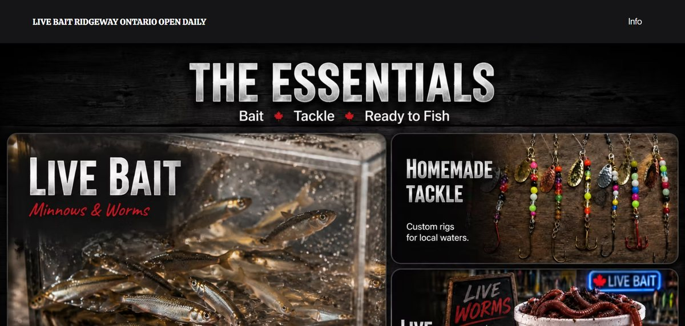
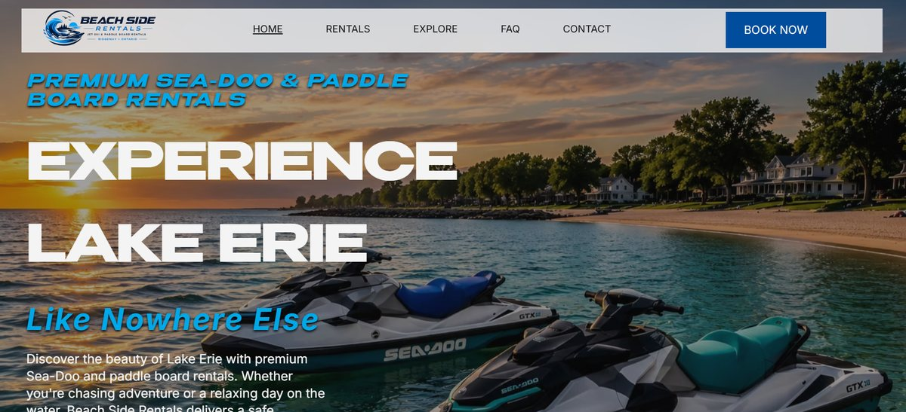

Websites I've built for local Ontario businesses.

A bold, dark-themed site for a local live bait and tackle shop. It puts the essentials up front (live bait, homemade tackle, live worms) and includes hours, an interactive map, a call/text button, and search-friendly descriptions so local anglers can find the shop.
View live site
A booking-focused site for a Sea-Doo and paddle board rental business on Lake Erie. It includes fleet cards with pricing, clear rental policies, opening hours and directions, with Book Now buttons throughout.
Launching soonTell me what you'd like fixed or built and I'll send back a clear quote.